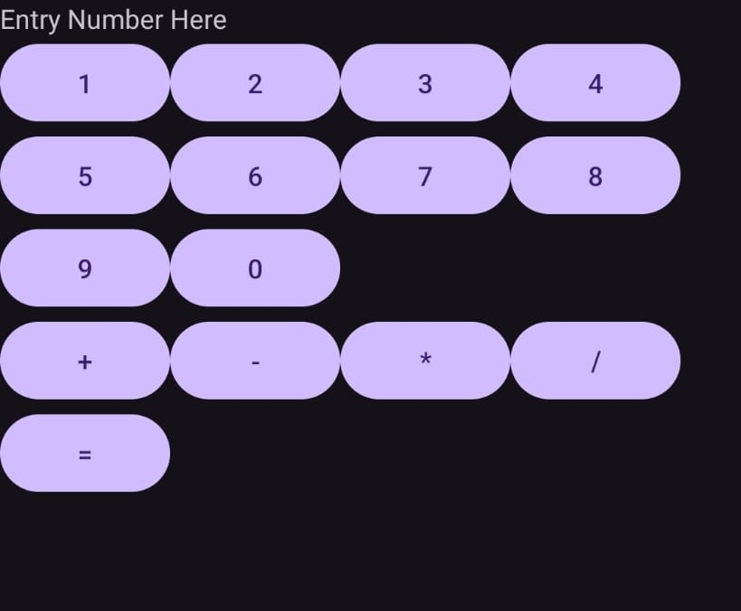

My Projects
Here are some of my projects, based on college assignment project
-
Study Buddy Finder
Aplikasi ini membantu pengguna menentukan tempat belajar, menemukan teman di sekitar, dan merencanakan sesi belajar melalui fitur chat. Dengan langkah sederhana, pengguna dapat mengatur lokasi, mencari teman, dan mengirim permintaan, sehingga kolaborasi belajar menjadi lebih efisien.
Menggunakan ReactJS dan supabase
-

Kalkulator Sederhana berbasis android
Aplikasi Kalkulator Sederhana adalah aplikasi Android yang dikembangkan menggunakan bahasa Java. Menyediakan fungsi dasar seperti penjumlahan, pengurangan, perkalian, dan pembagian, aplikasi ini menawarkan antarmuka yang intuitif dan responsif, memungkinkan pengguna melakukan perhitungan dengan mudah dan efisien untuk kebutuhan sehari-hari.
Menggunakan Java
-
Aplikasi Sepatu
aplikasi sederhana yang dirancang untuk membantu pengguna melihat dan mengelola koleksi sepatu menggunakan tampilan ListView. Aplikasi ini menyediakan fitur History Produk, yang memungkinkan pengguna melacak produk yang pernah dilihat sebelumnya, serta fitur Detail Information, yang memberikan informasi lengkap mengenai setiap sepatu. Dengan antarmuka yang intuitif, aplikasi ini cocok untuk membantu pengguna yang ingin memilih atau mengorganisasi koleksi sepatu mereka dengan praktis.
Menggunakan Java dan SQLite